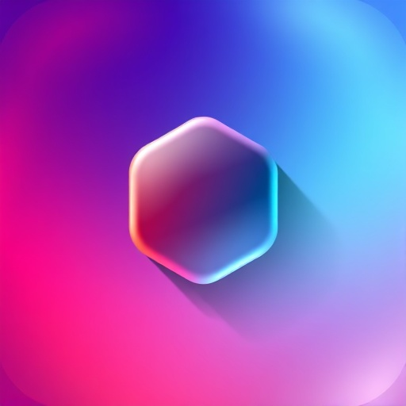

Shellonkrkduser@krkdsrv:~$ ls -la drwxr-xr-x 5 user user 4096 Jun 15 10:30 projects -rw-r--r-- 1 user user 220 Jun 15 09:15 .bashrc
Klasörler ve sunucu bağlantılarını şifreli yedek olarak dışa/içe aktarın. Export için belirlediğiniz şifreyi güvenli bir yerde saklayın.